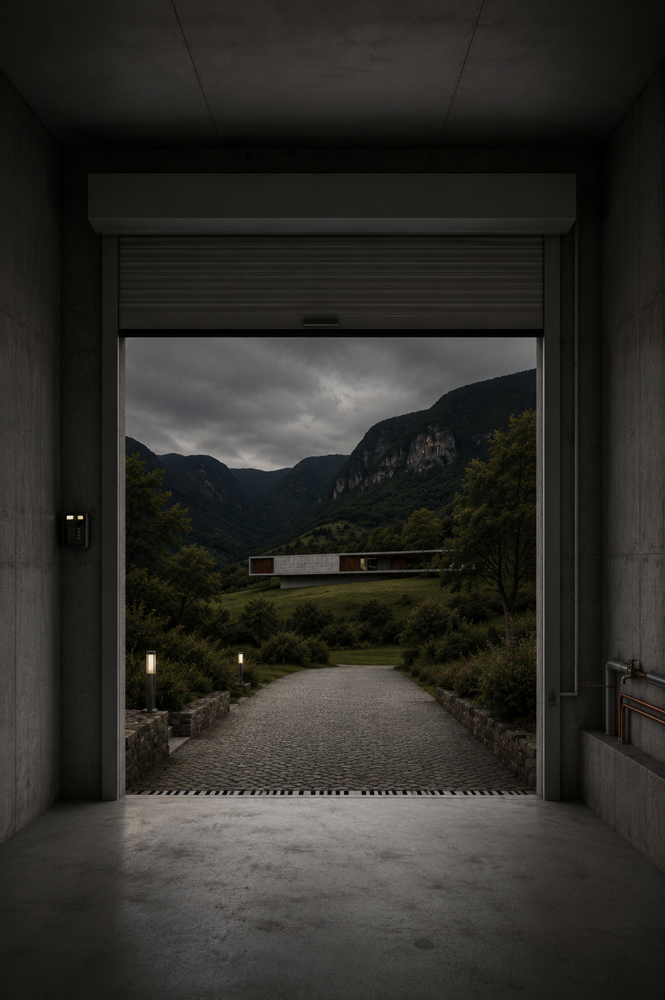

Uși manuale sau automate, cu lamele de 55, 75 sau 100 mm — soluții pentru orice utilizare și buget.

Ușile de garaj manuale cu lamele subțiri 55 mm sunt o soluție compactă și economică. Acționarea manuală fiabilă și designul compact le fac ideale pentru clienți cu buget controlat.
Perfect pentru clienții care caută o soluție economică și fiabilă.
Solicită ofertă uși garaj manuale 55 mm
Ușile de garaj manuale cu lamele intermediare 75 mm oferă rigiditate mai bună și echilibru între preț și rezistență. Soluție medie care combină compactitatea cu durabilitate sporită.
Alegerea pentru cei care doresc un upgrade de la lamele subțiri, cu durabilitate mai bună.
Solicită ofertă uși garaj manuale 75 mm
Ușile de garaj manuale cu lamele groase 100 mm oferă rezistență ridicată și aspect robust. Soluția pentru cei care valorează durabilitatea maximă și robustețea, cu acționare manuală fiabilă.
Pentru clienții care caută maximum de durabilitate și rezistență cu acționare manuală.
Solicită ofertă uși garaj manuale 100 mm
Ușile de garaj automate cu lamele subțiri 55 mm combină comoditatea și economia. Motorul electric și lamelele compacte oferă utilizare comodă la preț accesibil pentru cei care apreciază automatizarea.
Pentru clienții care doresc confort automatizat la preț accesibil.
Solicită ofertă uși garaj automate 55 mm
Ușile de garaj automate cu lamele intermediare 75 mm oferă un bun echilibru între confort și rezistență. Potrivite pentru utilizare frecventă, cu motor electric silențios și rigiditate bună.
Alegerea pentru cei cu utilizare frecventă care valorează confortul și durabilitatea.
Solicită ofertă uși garaj automate 75 mm
Ușile de garaj automate cu lamele groase 100 mm sunt soluția premium, cu nivel ridicat de siguranță și durabilitate. Motorul electric de putere și lamelele robuste oferă protecție maximă și confort automatizat complet.
Pentru clienții care valorează maximum de siguranță, durabilitate și confort automatizat.
Solicită ofertă uși garaj automate 100 mm
Măsurători gratuite la domiciliu și consultanță personalizată.
SUNĂ ACUM 0758 271 007